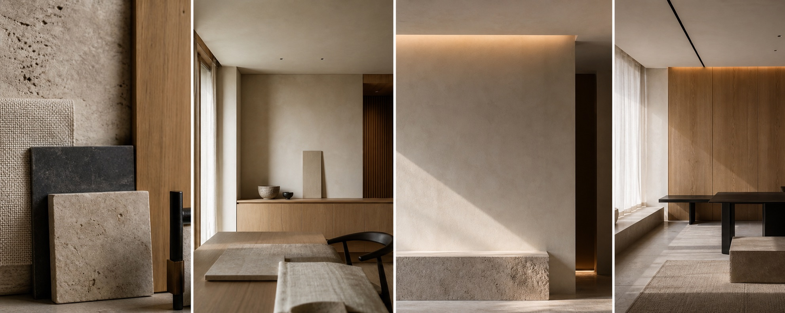
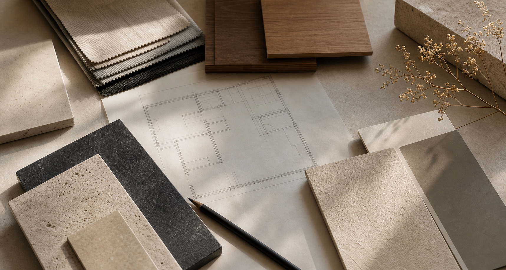
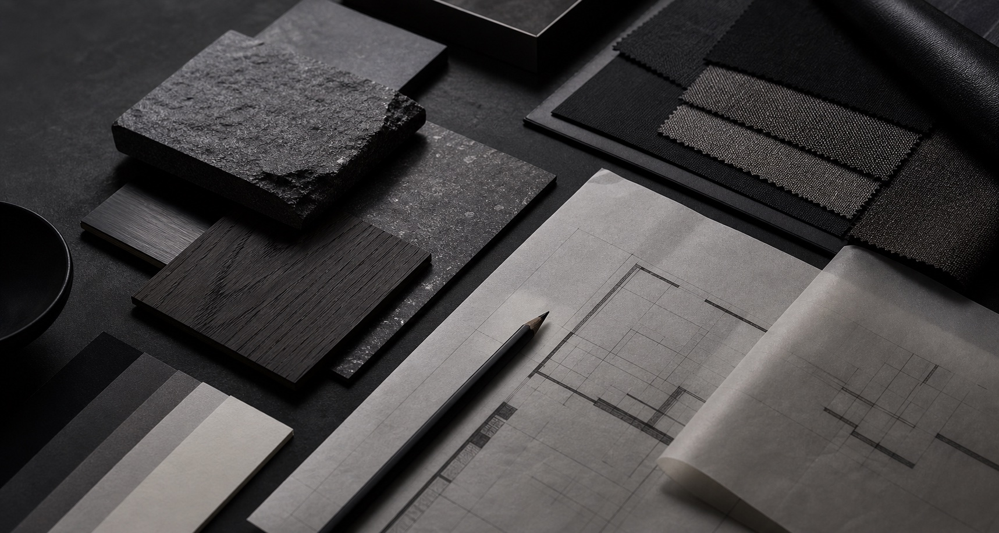
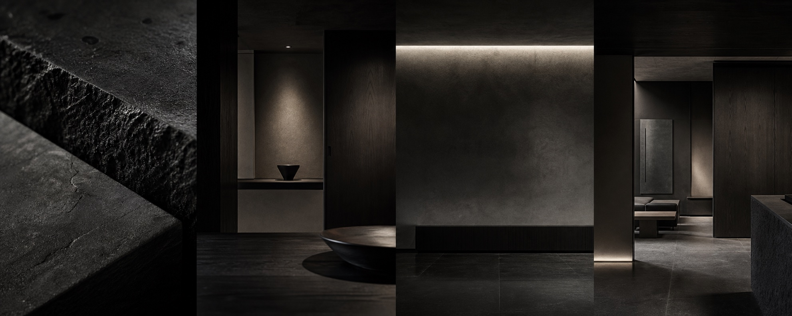

Architecture that
fits the life within.

RESIDENCE / HOUSE PLANNING Fukuoka, Japan
INTERIOR / MATERIAL STUDY Shimane, Japan COMMERCIAL / BANDEL OSAKA
Osaka, Japan
COMMERCIAL / BANDEL OSAKA
Osaka, Japan

PROFILE / DESIGN PROCESS Office information
CONTACT / CONSULTATION First consultation